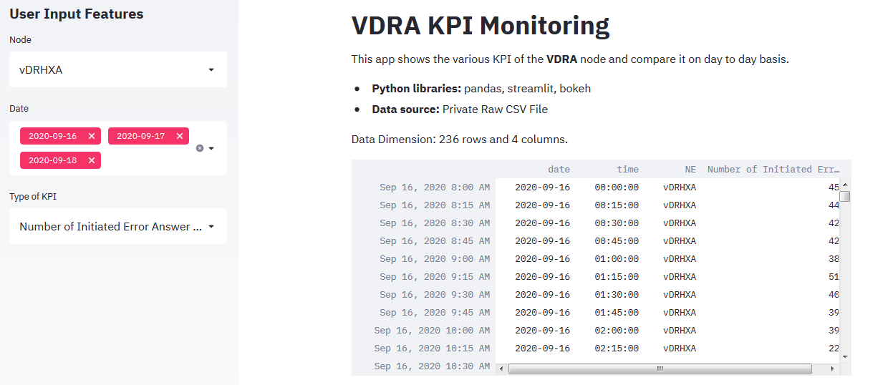
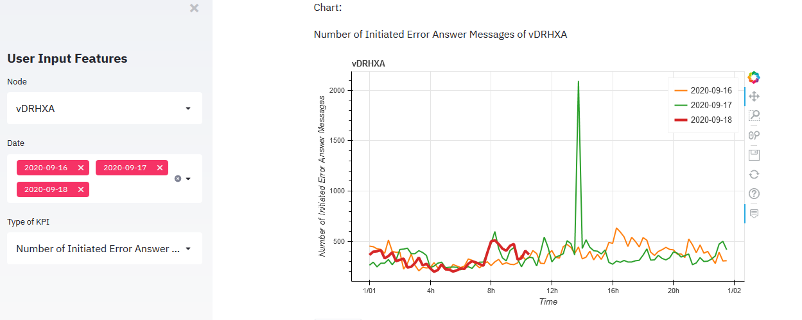
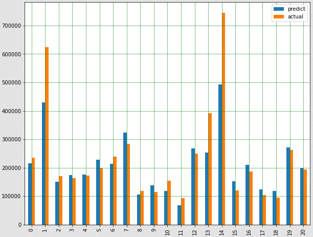

This is the content page of my data science portfolio.The purpose is to present my skill in Data Science, Python and SQL. I am looking for career in data science. If I am the right candidate you are looking for, please contact me. You may also contact me to further understand what I have.
Email: nekhang@outlook.com
LinkedIn: https://www.linkedin.com/in/yapsoonchung
This is my deployment of network KPI visualization python app via Streamlit platform. Users are able to view different type of KPI on the selected nodes and compare them on day to day basis, using interactive chart. It is able to schedule the KPI to be refreshed hourly for early fault detection. More data science projects such as capacity forecasting has been deployed on local servers.
Project link: https://share.streamlit.io/ekng93/streamlit_v1.0/main/DRA_KPI_streamlit.py
Source code: https://share.streamlit.io/ekng93/streamlit_v1.0/main/DRA_KPI_streamlit.py


This project is to predict the sales price of house using machine learning (Linear Regression).By choosing appropriate features, a linear regression model is trained and then use to predict the sales prices of house in test dataset.
The approaches used are as below:

This project is to predict the sales price of house using machine learning (Linear Regression).By choosing appropriate features, a linear regression model is trained and then use to predict the sales prices of house in test dataset.
The approaches used are as below: